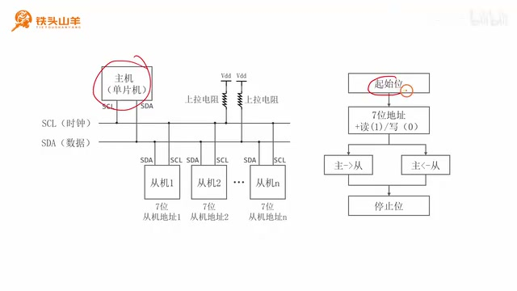
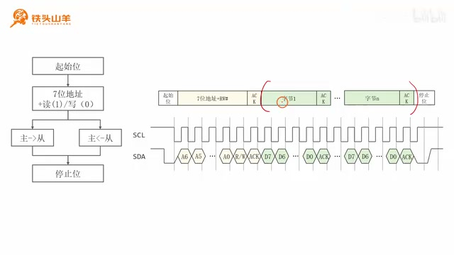
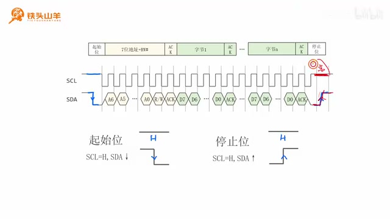
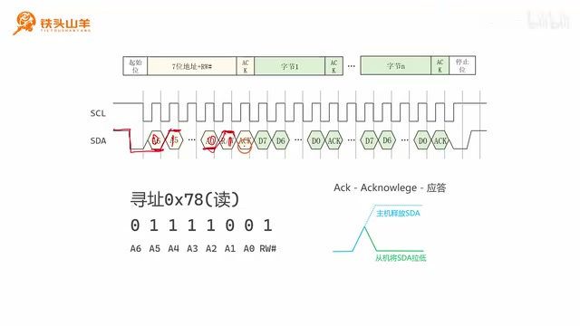
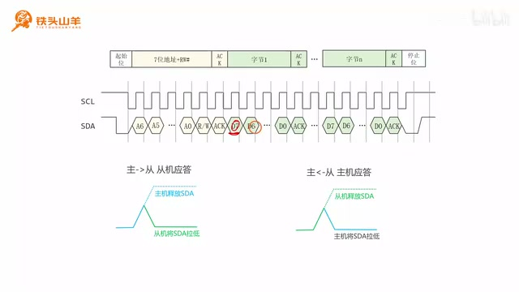
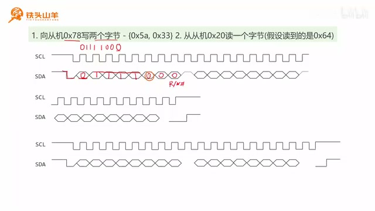
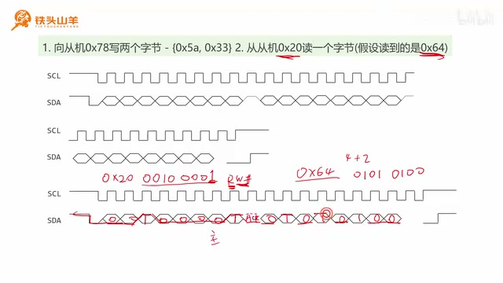
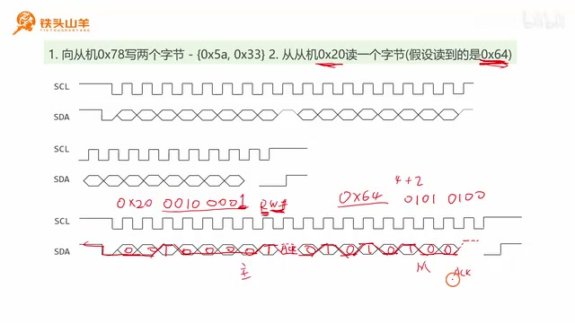

P018 · 4.2 （I2C）通信协议¶
各位同学大家好，我是铁头山羊。今天我们开始学习第四章的第二节，通过本节来讲解 I²C 总线的通信协议。本套视频所需要的材料都包含在这个开发套件包里，大家可以扫描屏幕上的二维码，进入淘宝店铺购买。购买套件之后，你将获得课程所有的课件和源码，还能加入答疑群和 UP 主直接交流。
本期视频分成六个部分来讲：第一，简单回顾 I²C 通信的基本流程；第二，根据通信流程讲解 I²C 数据帧的格式；第三到第五，展开讲数据帧里的每一部分，包括起始位和停止位、寻址阶段以及数据传输阶段；最后，第六部分用一个实际例子练练手。下面从第一部分开始。
I²C 通信的基本流程¶
先简单描述一下 I²C 数据通信的过程。通信由主机主动发起，也就是发送一个起始位。第二个阶段是寻址：主机往总线上发送从机的七位地址，后面还要跟一个比特位，表示数据通信的方向，到底是读还是写。主机向从机写数据时，这个比特位等于 0；主机从从机读数据时，这个比特位等于 1。七位地址加上读写位，一共发送八位，也就是一个字节。
寻址阶段发送完之后，下一步进行数据传输。数据可以有两个方向：主机向从机写，或者主机从从机读。数据传输完成后，主机要主动停止传输，也就是向总线上发送停止位。这就是 I²C 数据通信的基本过程。

I²C 基本通信流程：主机、总线与起始、寻址、数据、停止阶段 · 原片 01:05
I²C 数据帧格式¶
刚才简单描述了 I²C 数据通信的基本流程，接下来学习 I²C 数据帧的格式。数据帧格式和上面的流程一一对应：先是起始位，再是寻址阶段，寻址时发送七位地址加方向位，然后是数据传输，最后是停止位。
观察数据帧，中间的数据传输阶段以字节为单位，而且一个数据帧可以传输多个字节。这和之前学过的串口很不一样：串口的数据帧每次只能传输 8～9 个比特位，一般传输一个字节；I²C 总线则一次可以传输多个字节。简单了解数据帧格式之后，下面展开看每一部分。

I²C 帧由起始、地址与方向、数据字节和停止阶段组成 · 原片 02:45
起始位和停止位¶
起始位意味着数据帧传输开始，所以位于数据帧开头；停止位意味着数据帧结束，所以位于数据帧末尾。发送起始位很简单：当 SCL 是高电平时，让 SDA 出现一个下降沿。比如 SCL 这条线是高电平，我们主动把 SDA 拉低，就发送了起始位。停止位正好相反：SCL 也要保持高电平，但要求 SDA 出现上升沿。SCL 为高时，把 SDA 拉高，就会出现上升沿，这就是停止位。 再看 I²C 数据帧实际的波形图：上面的波形表示 SCL，也就是时钟，是高低变化的方波；下面的线表示 SDA，用来传输数据。数据通信前总线处于空闲状态，因此 SCL 和 SDA 都是高电平。主机想发起通信时，要发送起始位：把 SDA 写成 0，电压由高变低，出现下降沿，而 SCL 仍是高电平，所以这是起始位。对于停止位，让 SCL 时钟线保持高电平，再由主机主动把 SDA 拉高，出现上升沿，这就是停止位。
总结一下：所谓起始位，就是 SCL 为高电平时 SDA 出现下降沿；停止位就是 SCL 为高电平时 SDA 出现上升沿。看完起始位和停止位，下面来看第二个阶段，也就是寻址阶段。

SCL 为高时，SDA 下降沿表示起始，上升沿表示停止 · 原片 05:00
寻址阶段与应答 ACK¶
寻址阶段位于起始位之后、数据开始传输之前。在图中黄色的位置，主机会向总线上发送七位从机地址，再加一个 RW 位，也就是方向位。R 代表英文 read（读），W 代表 write（写）；图中 W 后面的井号表示 0，所以写是 0，读是 1。
主机发送完这些内容后，会等待被寻址的从机应答。从机发送 ACK 来应答。这个应答信号相当于主机叫从机的名字，从机答应一声； 收到 ACK 就意味着寻址成功，主机才会进行下面的数据传输阶段。
举一个实际例子：主机要寻址地址为 0x78 的设备，并且规定方向是读。先把 0x78 展开成二进制 01111000。因为地址只有七位，把最后一个 0 去掉，前面七位就是地址；这个最后的位作为 RW 位，也就是方向位。读代表 1，所以这一位填 1。把这些位写到上面的波形里：遇到 0 发低电平，遇到 1 发高电平，中间没有展开的数字省略。发送完波形之后，要等待从机应答，也就是 ACK。
ACK 是这样产生的：主机先释放 SDA，也就是把 SDA 引脚写成 1。主机把 SDA 引脚写 1 时，它的 SDA 输出就从总线断开，线悬空；由于上拉电阻的作用，SDA 呈现高电平。如果没有设备应答，它就一直维持高电平，这表示没有收到应答。如果有设备要应答，就由这个设备把 SDA 拉低，主机检测到低电平，就知道收到了 ACK。因此在波形上，主机首先释放 SDA 这条线，然后从机把 SDA 拉低，寻址阶段就结束了。

寻址波形后由接收从机拉低 SDA 应答 ACK · 原片 07:15
数据传输阶段¶
寻址阶段成功后，就可以传输数据了。一次可以传输多个字节：发送方发一个字节，接收方回复一个 ACK；发送方再发一个字节，接收方再回复一个 ACK。
如果是主机发送、从机接收，就是主机发一个字节，从机回 ACK，主机再发一个字节，从机再回 ACK。如果是主机读取从机发送的数据，就是从机发一个字节、主机发 ACK，从机再发一个字节、主机再发 ACK。发送字节的规则和前面一样，低电平表示 0，高电平表示 1。ACK 也和刚才一样：发送方释放 SDA 线，然后接收方把 SDA 拉低表示 ACK。这里先不多讲，待会儿会用一个例子练习。

发送方每发一个字节，由接收方拉低 SDA 回 ACK · 原片 09:00
例一：向从机写入两个字节¶
假设主机寻址从机 0x78，先写入两个字节 0x5A 和 0x33；第二步，再从另一个从机 0x20 读取一个字节，假设读到的是 0x64。先看第一部分：向 0x78 写两个字节。
主机先把 SDA 拉低，发送起始位。然后进入寻址阶段，发送从机地址 0x78。把它转换成二进制为 01111000，再去掉最后一个 0，把这一位作为 RW 位。因为要写两个字节，写对应 0，所以这里填 0，最终发送的是 01111000。遇到 0 发低电平，遇到 1 发高电平，把波形连起来。 到这里主机释放 SDA，等待从机 ACK。假如寻址成功，对应的从机就发送低电平表示 ACK。
接着开始传输数据，发送 0x5A 和 0x33。先发送第一个 0x5A：展开成二进制是 0101，A 表示十（即十进制 10），为 1010，因此先发高位，完整的二进制是 01011010。规则还是低电平表示 0、高电平表示 1，把波形连起来。最后发送方，也就是主机，释放 SDA；从机把它拉低，表示告诉主机已经收到这个字节的数据。收到这个确认之后，再发送第二个字节 0x33。
0x33 写成二进制是两个 0、两个 1、两个 0、两个 1，也就是 00110011，把这些位写到下面的波形里：碰到 0 就是低电平，碰到 1 就是高电平，再把波形连起来。这里原先画错了，这个位置是高电平。然后主机释放 SDA，从机把线拉低，发送 ACK，告诉主机数据收到了。
发完 0x33 后，数据传输就结束了。主机先把 SCL 拉高，使 SCL 变成高电平，再把 SDA 拉高。这样在 SCL 为高电平时，SDA 出现上升沿，这就是停止位。

写入示例：向 0x78 发送 0x5A、0x33 · 原片 10:30
例二：从从机读取一个字节¶
现在看第二个阶段：主机要从从机 0x20 读取一个字节。和刚才一样，在开始传输数据之前，先发送起始位，然后进入寻址阶段。寻址时要发送七位从机地址 0x20。把 0x20 写成二进制是 00100000，去掉最后一个 0 后，最后一位填 RW 位。W 代表写、对应 0；R 代表读、对应 1。因为我们要读，所以这一位填 1，最终这八位为 00100001。遇到 0 发低电平，遇到 1 发高电平，波形就是这样。
地址发送完后，主机是发送方，因此它释放 SDA，由从机应答。收到从机 ACK，表示寻址成功。寻址成功之后，从机向主机发送数据 0x64。把 0x64 转成二进制：6 等于 4+2，对应 0110；4 对应 0100，合起来是 01100100。 图中把它填成 01010100（这与 0x64 的计算结果 01100100 不一致；此处保留图中写法）。从机开始发送时，遇到 0 发低电平、遇到 1 发高电平，把这些线连起来。

读取示例：从机发送 0x64 后由主机结束单字节读取 · 原片 14:22
接下来因为从机是发送方，所以由从机释放 SDA，再由主机发送 ACK。不过我们只读一个字节，也就是只读这一个 0x64，后面不想继续读了，那怎么办？主机就不发送 ACK，让总线保持高电平。随后主机再发送停止位：这里是上升沿，SCL 为高电平，表示数据传输结束。大家注意，当我们读完这个数据之后不想读新的数据了，所以这里发送的是 NAK，也就是不应答。

单字节读取后主机不应答（NAK）并发送停止位 · 原片 14:45
好的，以上就是这两个例子。以上就是本期视频的全部内容，我是铁头山羊，感谢大家收看，让我们下期视频再见。